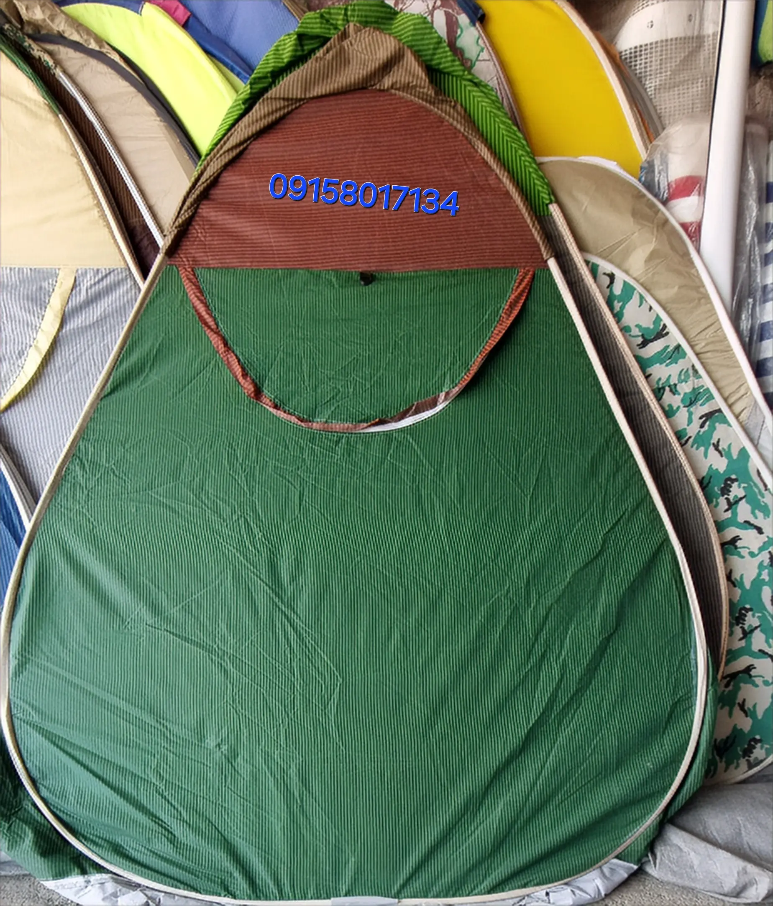

مجله سفر
راهنمای خرید، تعمیر و نگهداری چادر مسافرتی، چادر برزنتی و نکات کاربردی کمپینگ از تجربه کارگاه چادردوزی جزیره J.A.T

تعمیر چادر مسافرتی؛ راهنمای کامل تشخیص آسیب و ترمیم اصولی
پارگی پارچه، خرابی زیپ، نفوذ آب و آسیب اسکلت از مشکلات رایج چادر هستند. در این مقاله روش تشخیص و تعمیر هرکدام را بررسی میکنیم.
تعمیر فنر چادر مسافرتی؛ علت خرابی و روش تعویض
خم شدن یا شکستن فنر میتواند عملکرد چادر را مختل کند. با روش صحیح بررسی و تعویض فنر آشنا شوید.

چگونه چادر مسافرتی مناسب انتخاب کنیم؟
نکات مهم انتخاب چادر بر اساس تعداد نفرات، فصل استفاده، نوع پارچه، تهویه و شرایط سفر.

نگهداری چادر برزنتی؛ ۱۰ نکته برای افزایش عمر
روشهای صحیح تمیز کردن، خشک کردن، جمع کردن و نگهداری چادرهای برزنتی برای افزایش دوام.

چگونه پارگی چادر مسافرتی را تعمیر کنیم؟
روشهای اصولی ترمیم پارگی، سوراخهای کوچک و آسیبهای پارچه چادر مسافرتی.

تعمیر زیپ چادر مسافرتی؛ علت خرابی و راهکارها
علت گیر کردن، جدا شدن و خراب شدن زیپ چادر و زمان مناسب برای تعمیر یا تعویض آن.

چگونه چادر مسافرتی را ضدآب کنیم؟
روشهای آببندی درزها و افزایش مقاومت چادر در برابر باران و رطوبت.

روش صحیح جمع کردن و نگهداری چادر مسافرتی
نکات مهم برای خشک کردن، جمع کردن و نگهداری طولانیمدت چادر بدون آسیب به پارچه و اسکلت.

چادر مسافرتی برای شمال ایران؛ انتخاب مناسب باران و رطوبت
ویژگیهای مهم چادر برای مناطق مرطوب و بارانی شمال ایران و نکات انتخاب مناسب.

تعمیر چادر مسافرتی در آمل؛ تعمیر بهتر است یا خرید؟
بررسی امکان تعمیر پارچه، زیپ، فنر و بخشهای مختلف چادر و زمان مناسب برای تعمیر یا تعویض.
چطور چادر مسافرتی مناسب انتخاب کنیم؟
ظرفیت، نوع پارچه، تعداد لایه و فصل استفاده؛ نکاتی که قبل از خرید چادر باید بدانید.
چطور عمر چادر را بیشتر کنیم؟
خشک کردن بعد از باران، جمعکردن درست، نگهداری در انبار و اشتباهات رایج.

چادر برزنتی یا مسافرتی؟ کدام برای شما بهتر است؟
تفاوت دوخت، دوام، وزن و کاربرد چادر برزنتی و چادر مسافرتی را بررسی میکنیم.
چادر مناسب باغ و حیاط | راهنمای انتخاب چادر ثابت و نیمهثابت
چه چادری برای باغ و حیاط مناسب است؟ تفاوت چادر ثابت و نیمهثابت و نکات مهم قبل از خرید.
چادر زمستانی مناسب چه ویژگیهایی باید داشته باشد؟
ویژگیهای مهم چادر برای استفاده در سرما، برف و باد شدید و نکات انتخاب چادر چهارفصل.

راهنمای خرید چادر کودک؛ نکات مهم قبل از انتخاب
ابعاد مناسب، ایمنی، جنس پارچه و طرحهای محبوب چادر کودک برای بازی در منزل و فضای باز.
اشتباهات رایج هنگام خرید چادر مسافرتی
رایجترین اشتباهاتی که باعث میشود چادر نامناسب بخرید و بعداً پشیمان شوید.

سایبان و آلاچیق؛ راهنمای انتخاب برای حیاط و باغ
تفاوت سایبان بازویی، آلاچیق و سایبان ثابت و نکات مهم برای انتخاب مناسب فضای باز.